一个利用Unity完成的赛博朋克风格场景。
在赛博世界，人类生活每一个细节都是受计算机网络控制的黑暗地带，由于商业巨头的过度膨胀，导致经济高过了政治，成为驱动世界前进的动力，于是我们看到庞大的跨国公司取代政府成为权力的中心。这种高强度的压抑氛围也导致部分的人性的泯灭，其中的许多人物都要靠一些高强度的刺激以激发人们对于一些事物的感知，所以在这个世界的很多角落里通常都会充斥各种暴力、毒品等过分裸露的事物，而那些雨夜与霓虹灯搭配起来的强烈视觉表现元素更好地阐述了日益发达的科技与日益淡薄的人性的这对尖锐的矛盾冲突。就如同希腊神话中用蜡烛翅膀奋力高飞的伊卡洛斯一样，在离太阳最近的时候，绽放了最美的瞬间，但翅膀的融化注定了陨落的命运。
——南宫萧宸，《从蒸汽时代到后启示录：幻想未来世界旅行不完全指南》
1. 概述
当提起赛博朋克这个词时，或许每个人在脑海中第一时间闪过的东西都不一样——“街道氤氲湿冷在霓虹灯下熙熙攘攘的场景” 、“‘高科技，低生活’的理念信条”、“沉溺虚拟世界最终幻灭的体验”、“配有《赛博朋克2077》LOGO的土味图’”……每一个都可以被叫做一个模因，它们都能看成赛博文化在进化中的 DNA。
赛博朋克在CDPR的《Cyberpunk2077》（2020最期待的游戏！没有之一！）面世后就引来了许多人的关注。因此想到利用Unity来完成一个赛博朋克场景的建立。
利用Unity实现的赛博朋克短片和场景有很多，比较有名的有beffio的《The Hunt》和
Manufactura K4的Dark City2。此外还有UE4大神紫无心的《霓虹中国》。
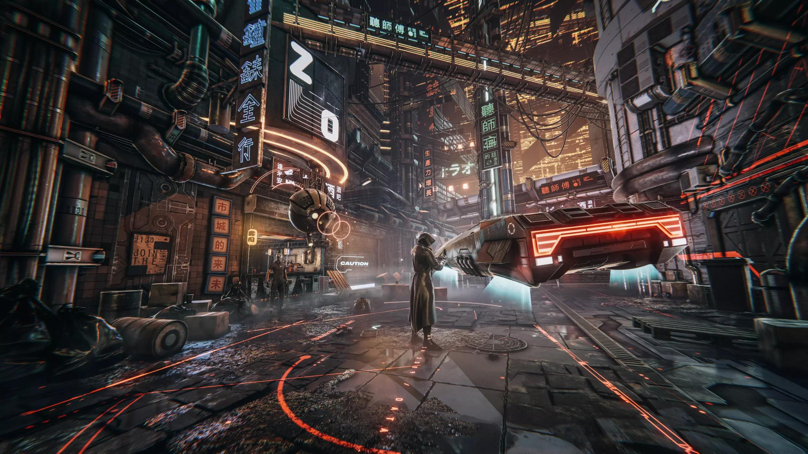
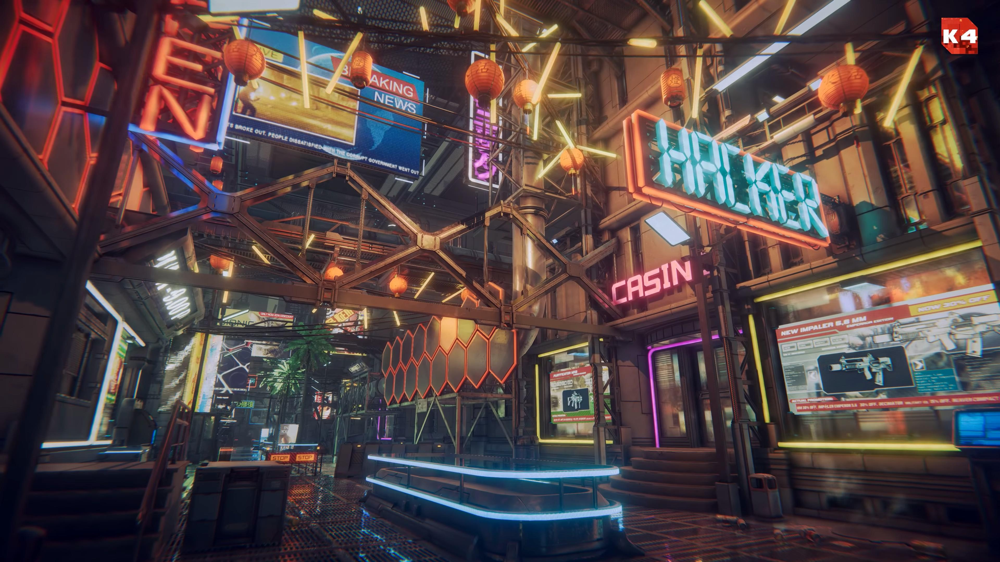
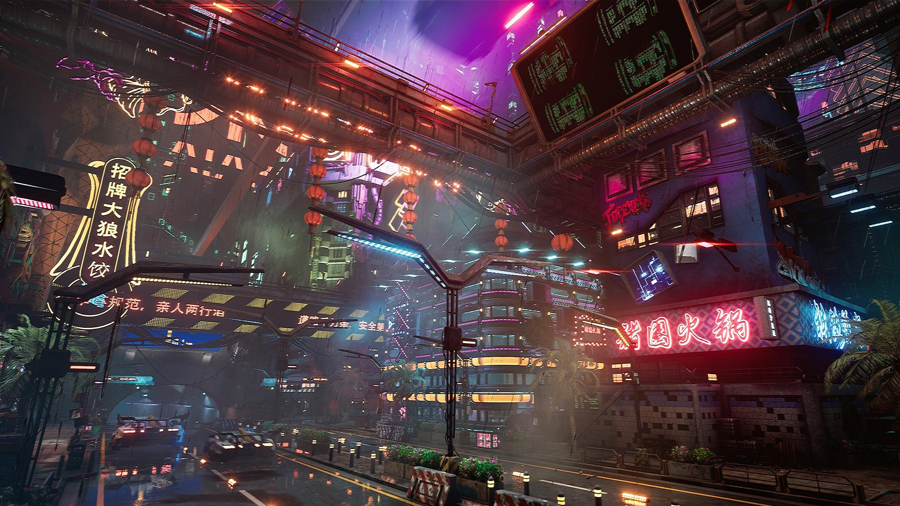
受《杀出重围》系列游戏（赛博朋克风格比较不错的游戏，值得一玩）的影响，我更倾向于霓虹元素稍微少的Low Life的低生活场景。因此使用了《Dark City2》的部分素材和一些其他模型来完成这个场景。
2. 灯光
灯光基本上都是用的点光源和自发光材质，部分使用了聚光灯（如建筑物的照灯）。
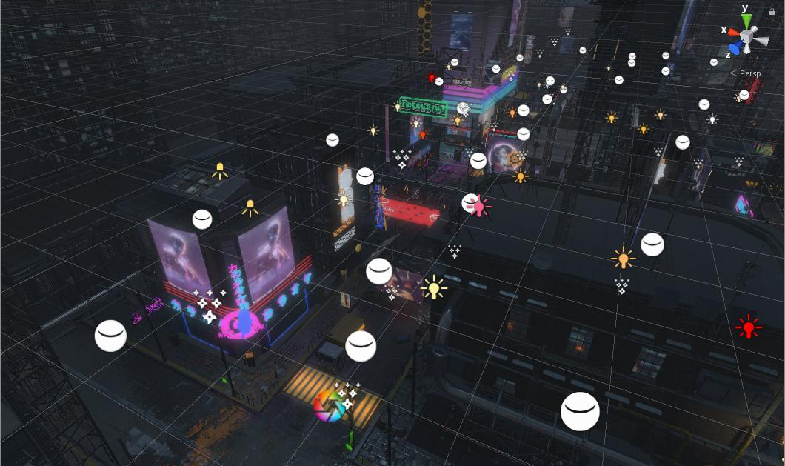
点光源主要是作为氛围光使用，平衡自发光的亮度。因此点光源的阴影就没那么重要，直接使用低分辨率的硬阴影并使用实时模式即可。
场景中还用了比较多的反射探针，反射探针的原理和光照探针类似，它允许我们在场景中的特定位置上对整个场景的环境反射进行采样，并把采样结果存储在每个探针上。当游戏中包含反射效果的物体从这些探针附近经过时，Unity会把从这些邻近探针存储的反射结果传递给物体使用的反射纹理。
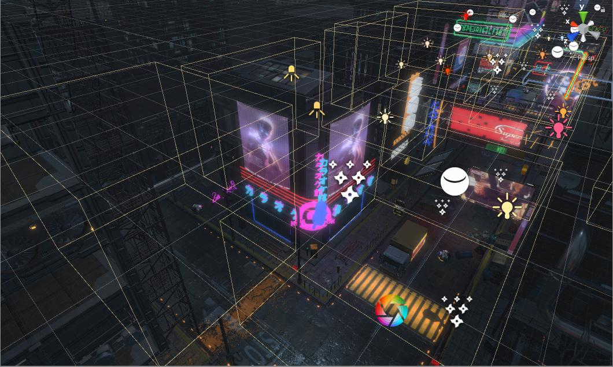
场景中的反射探针基本上放在路面上来确保路面的反射效果，为减少对帧速率的影响，在Time Slicing（时间切片）中设置为All faces at once（每9帧更新一次）或Individual faces（每14帧更新一次）。
为增强地面的反射效果，再添加与Skybox相符的平行光。
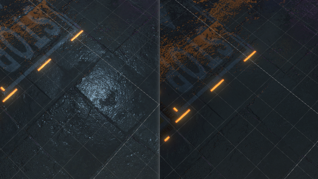
3. 粒子效果
场景中运用到粒子效果的有三处：下水道的水汽、雨、电火花。
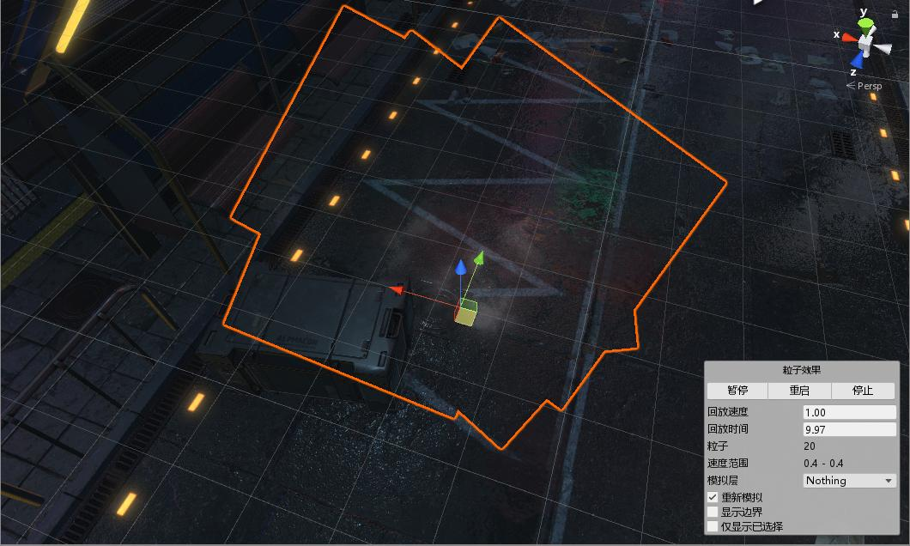
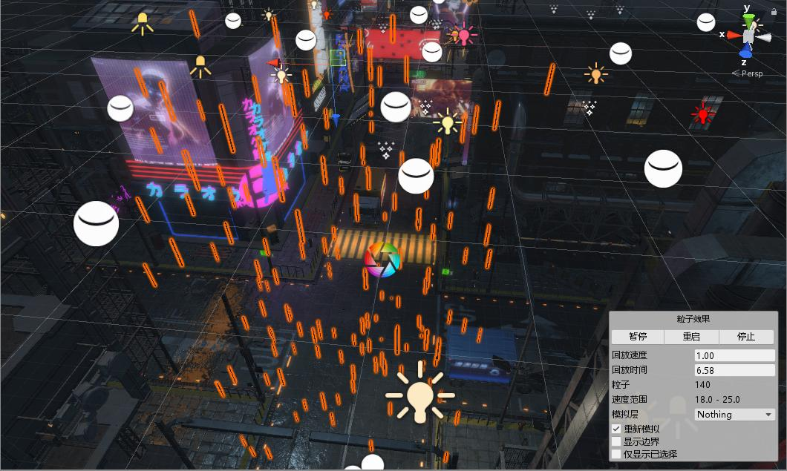
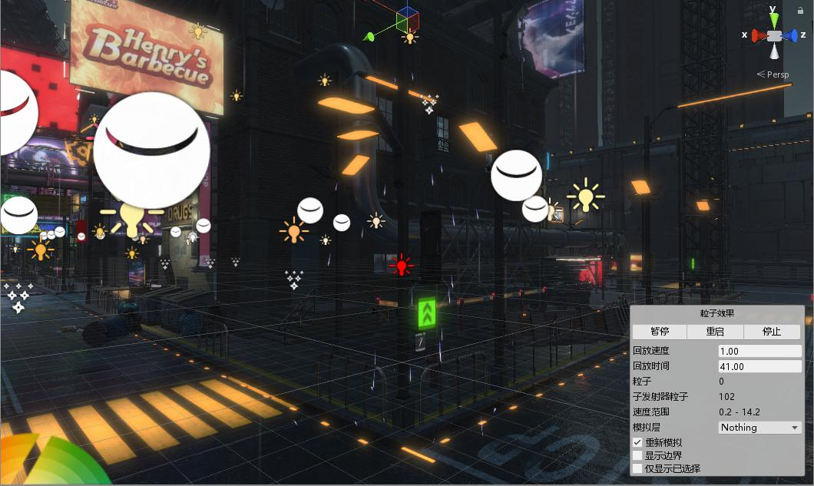
其中，街道地面的水花自然不是粒子器的效果，而是通过shader来实现（下次写一下这个效果的实现）。
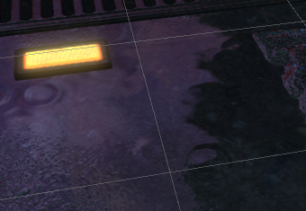
4. LOD优化
一开始场景中直接使用的LOD0的模型，在运行时帧率较低。在进行LOD优化后帧率得到明显提升。
LOD是Level Of Details的缩写即多层次细节。在计算机图形学中，LOD就是为了支持当物体远离观察者或者物体的重要程度不同，位置不同，速度不同或者视角相关的参数不同需要减少渲染3D模型的复杂度。
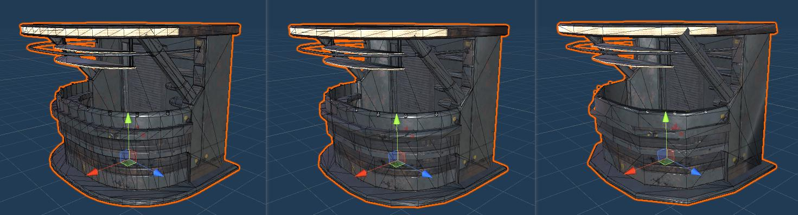
例如，同样的模型处在远处时，所占屏幕像素数会比较小，反正也是看不清楚了，这时候再渲染超多顶点的高精度的模型就会浪费计算性能。这时候如果在远处的能用更低精度的模型渲染，那么在不太影响渲染质量的情况下可以提高效率。上图则为同一物体的不同精细度模型。
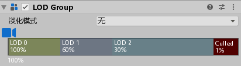
在Unity中为物体添加LOD Group组件并设置相应比例对应的模型即可。不过因为LOD使用了多个模型，所以会造成整个项目体积的增大，算是拿空间换性能的一种优化方法吧。
5. 后处理
5.1 抗锯齿
接着是使用Post-process进行后处理。首先在Post-process中通过开启SMAA抗锯齿来降低画面走样现象。SMAA是一种在FXAA的基础上改进的更高质量的抗锯齿方案。
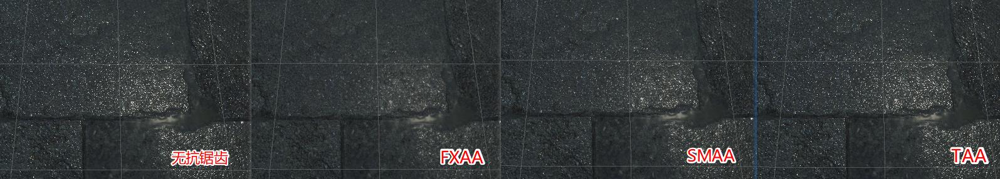
既然提到了抗锯齿，这里就简单的介绍一下常见的抗锯齿的方法：
SSAA （Supersample Anti-Aliasing）
超采样抗锯齿就是最简单粗暴的也是最有效的抗锯齿方法，缺点就是性能太差。任何类型的走样归根结底都是因为欠采样，那么我们只需要增加采样数，就可以减轻走样现象。以4x为例，4xSSAA对于每个像素（Pixel）计算4个子像素，将4个子像素的颜色求平均值，便能获得抗锯齿后的颜色。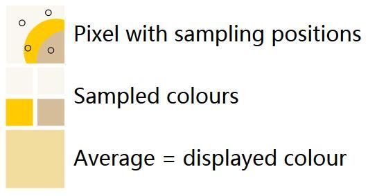
MSAA（Multisample Anti-Aliasing）
SSAA中每个像素需要多次计算着色，这对实时渲染的开销是巨大的。因此在SSAA的基础上发展出了MSAA。MSAA其实和SSAA一样，也是基于硬件的实现，只是在增加采样点和平均的时候用了一些 Trick，大幅优化了 SSAA 的效率，当然代价就是对特定的锯齿完全没有优化效果。
和 SSAA 不同，MSAA 其实是 Per-Pixel Shading。GPU 打开 MSAA 后，会在光栅化阶段根据图元边缘的计算出其覆盖的像素，和对该像素内每一个 Sample 的覆盖关系（coverage mask），在执行 PixelShader 后写入颜色时，会根据覆盖关系把 PS 输出的颜色和 BackBuffer 颜色进行平均后作为最终结果。
由于MSAA拥有硬件支持，相对开销比较小，又能很好地解决几何走样问题，在游戏中应用非常广泛。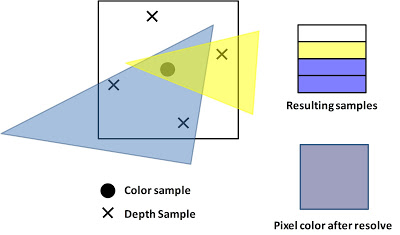
提到了MSAA，想起前几天知乎上寒霜之爪写的《延迟渲染与MSAA的那些事》中提到的在延迟渲染中使用MSAA（这个在很多参考资料上都注明了延迟渲染不支持硬件抗锯齿）。
FXAA （Fast Approximate Anti-Aliasing）
FXAA 是由 NVDIA 发明的高效后处理抗锯齿方案，也是目前所有后处理抗锯齿方案里面同等设置下效率最高的抗锯齿算法。FXAA 的边缘提取是根据 SceneColor 的 Luma 值进行检测的，所以可以提取到高光、阴影，几何边缘，半透明物体。SMAA（增强型亚像素形态抗锯齿）
SMAA 是由 CryEngine 开发的更注重效果的后处理抗锯齿方案，当然其效率在大多数移动平台上也是很难被接受的。它和FXAA的最大区别是会更具边缘的形状选择不同的周围像素进行模糊，尽量还原出合理的SubPixels。Temporal AA（Temporal Anti-Aliasing）
严格来说TAA并不能算一个具体的算法，而是更像一个统一的算法框架。和SSAA一样，TAA也能够同时减轻几何走样和着色走样的问题。总体来说TAA也分为采样（sampling）和合成（resolve）两个过程，不同的TAA的具体实现也是围绕这两个部分有所变化。
5.2 Bloom
Bloom特效是游戏中常见的一种屏幕效果。这种特效可以模拟真实摄像机的一种图像效果，它让画面中较亮的区域“扩散”到周围的区域中，造成一种朦胧的效果。
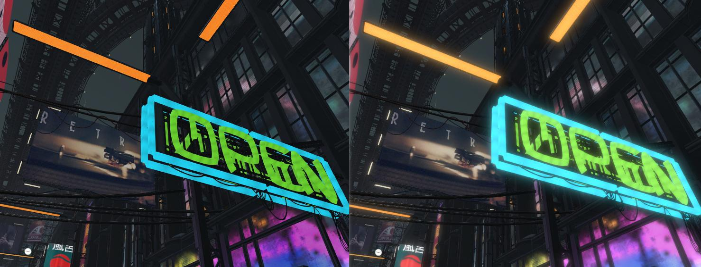
Bloom的实现原理很简单：我们首先根据一个阈值提取出图像中较亮区域，把它们存储在一张渲染纹理中，再利用高斯模糊对这张渲染纹理进行模糊处理，模拟光线扩散的效果，最后再将其和原图像进行混合，得到最终的结果。
HDR是High Dynamic Range的缩写，即高动态范围，与之对应的是低动态范围（Low Dynamic Range，LDR）。常用HDR图片储存格式有hdr/tif/exr/raw等。我们身边的电子图片，几乎都是LDR。常用LDR图片储存格式有jpg/png等。
LDR只能算是对现实颜色进行压缩，并呈现出来。看似丰富，但真和现实中的颜色比，还是局限了许多，一旦需要进行调色等后续加工，便会因为颜色不够而难以进行。这便诞生了HDR。单通道位数超过8位，便可称为HDR，常见有12位和16位。
总的来说，利用HDR渲染让亮的物体可以真的非常亮，暗的物体可以真的非常暗，同时又可以看到两者之间的细节。而把HDR用ToneMapping压缩成LDR，再用Bloom表现高光溢出的效果。这是引擎内对画面的处理方式。
6. 渲染结果(4K)
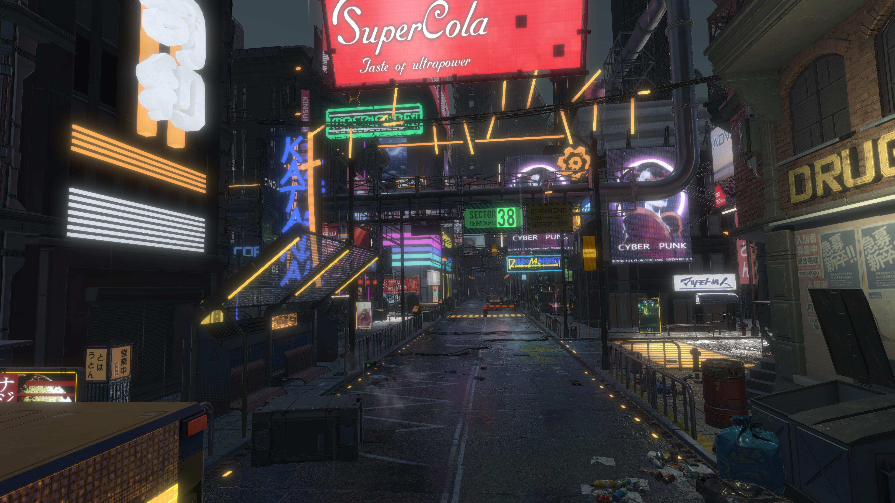
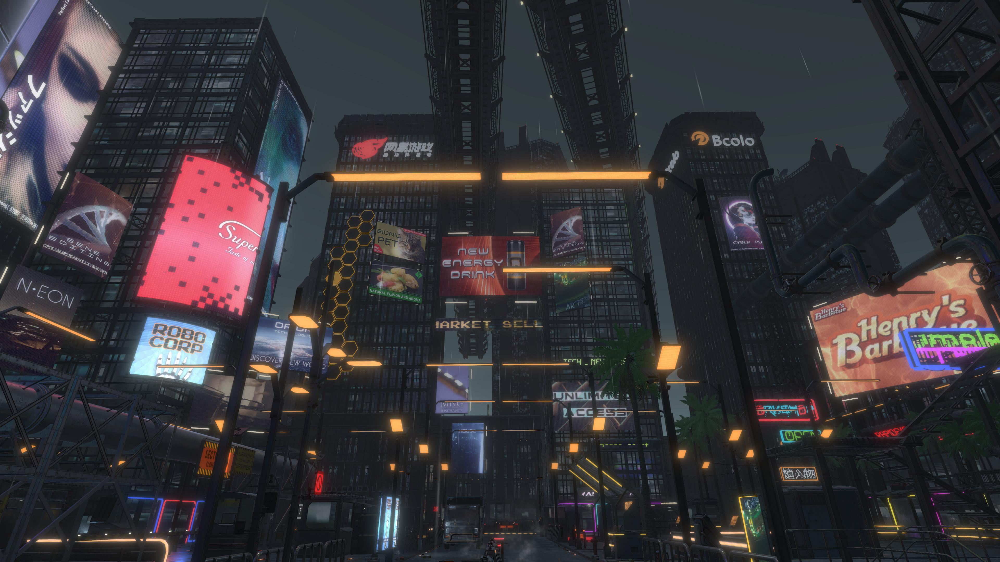
我们对赛博朋克的爱，并非从2077开始，也不会因此而结束。